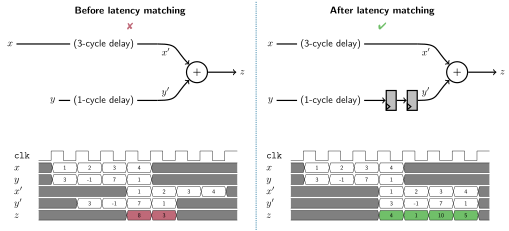
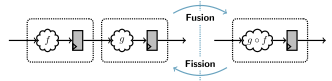

Related Projects#
Hardware Description Languages (e.g., VHDL, Verilog)#
Traditional hardware description languages give you a lot of control over the final product, but they are quite low-level and verbose. Sirop is a higher-level language; it lets you express your algorithm much more concisely.
The Sirop compiler can also perform certain helpful transformations that synthesis tools like Quartus are not allowed to perform. For example, the Sirop compiler can insert registers to balance the latency across different paths. This makes it easier to focus on the high-level computations rather than low-level details like the latency along each path.

The Sirop compiler can also fuse two pipeline stages into one. This lets the programmer break down their problem into small steps without sacrificing latency or resource-efficiency. Conversely, the compiler can split a single stage into two to improve the maximum clock frequency.

C-Based HLS (e.g., Altera HLS IP Gen, Vitis HLS)#
C and C++ are widely known and their programming model make a lot of sense when working with a CPU. However, they are a much less natural fit for programming FPGAs. Sirop is a custom language designed with FPGAs in mind.
Avoiding code that is a poor fit for FPGAs.
Sirop provides a set of “parallel patterns” from the functional programming paradigm: map, reduce, zip, etc.
Each of these has a natural implementation in RTL.
Programs written with these building blocks therefore tend to be more resource-efficient than corresponding C++ programs compiled with something like Intel HLS.
Representing FPGA-specific concepts.
When programming an FPGA, you’ll come across certain concepts that do not exist (or are much less prominent) in software.
For example, when processing a sequence of data, you need to decide how much spatial parallelism you want.
More spatial parallelism means processing more data per clock cycle (i.e., higher throughput), but it requires more hardware resources.
A plain for loop in C++ doesn’t tell the compiler how much spatial parallelism you want; you need to communicate that via tool-specific pragmas.
In Sirop, the level of spatial parallelism is clearly represented in the type system.
See the LCTES ‘26 conference paper for more details.
Domain-Specific Languages (e.g., HLS4ML)#
Domain-specific languages are very convenient in their target domain, but not very useful in other cases. Sirop aims to be more general.